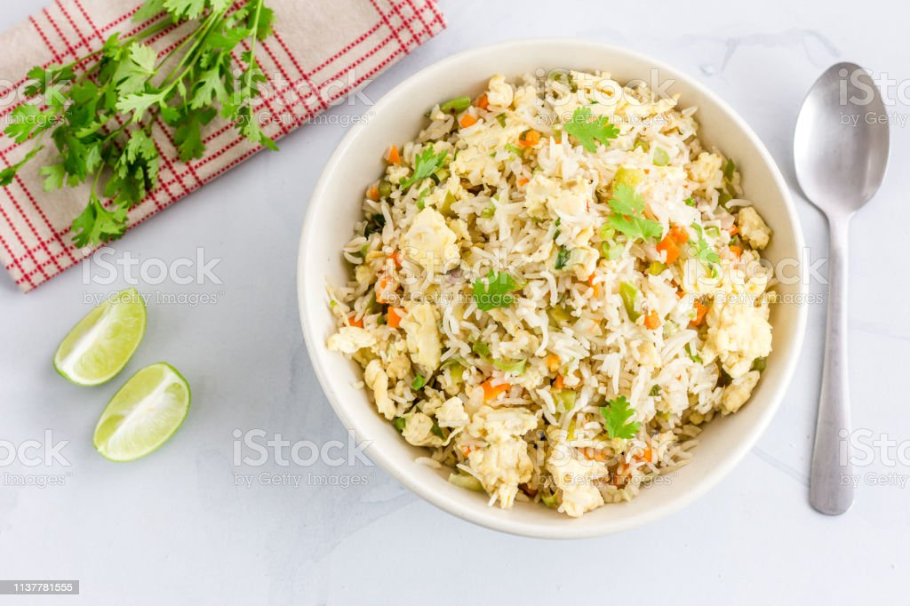

Fried Rice

Description
A procedure on how to make chinese stir fried rice.
Ingredients
- Rice
- Eggs
- Oil
- Chopped carrots
- Chopped onions
- Peas
- Minced garlic
- Soy sauce
- Oyster sauce
Steps
- In a pan, put oil
- Add eggs, carrots, onions, peas, and garlic, and sauté until soft and cooked
- Add rice, soy sauce, and oyster sauce into the pan, and stir with the eggs and vegetables
- remove pan from heat